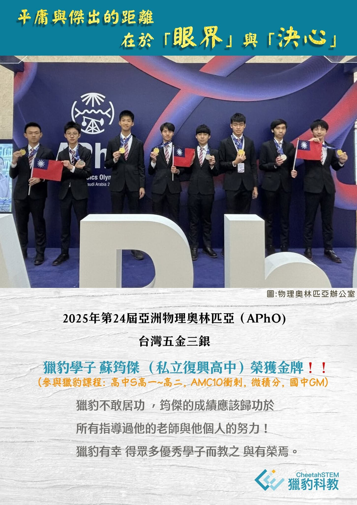

平庸與傑出的距離 在於「眼界」與「決心」‼️
～台灣頂尖少年 盡出自獵豹‼️
🟪【 S101升高一免費公開課
5/24三角函數、5/31基礎邏輯
星期六: PM1:30~4:00 宗煜老師授課👍】
筠傑從復興國中到直升高中，號稱永遠的第一。
他在獵豹練就紮實的基本功，從國中的獵豹實體課、AMC、一直修完高中資優S課程、微積分。
即使沒有科學班的資源，仍憑著堅強實力，厚積薄發 ，一路前進獲得亞洲物奧金牌，成為國手挑戰國際物奧（IPhO)！
❤也謝謝筠傑媽媽肯定:「他在獵豹收穫很多，也開啟他數物的興趣。」
獵豹以筠傑為榮！
🤩筠傑長期參與獵豹課程: 高中S(高一~高二), AMC10衝刺, 微積分, 國中獵豹實體課
🔺頂尖資優生的搖籃:獵豹高中S課程:
含金量最高的高中數學課程
👍眾多優秀高中S畢業的學長姐: 2025中一中科學班榜首, 多位學子高分考取高中科學班, IJSO金牌保送科學班, EGMO兩次奪金, APhO金, AMC10滿分, APX金牌 ...
🔺『2025/07獵豹國中數學J/FJ課程開跑！』
